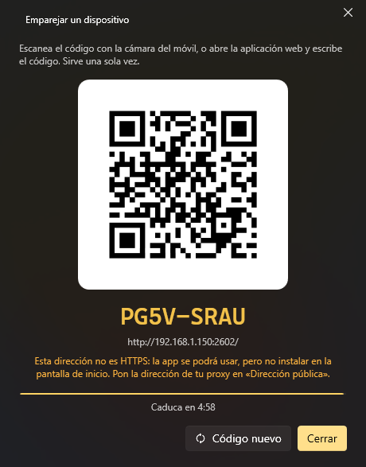

Móvil y control remoto
Aplicación web (móvil, tableta, cualquier navegador)
Opciones → Aplicación web enciende un pequeño servidor web en tu PC (el puerto 2502 por defecto). Desde un móvil en la misma red tienes tus comandos y menús, el volumen y la salida de audio, un touchpad y un teclado, órdenes de voz y el chat de los asistentes. Se puede instalar en el móvil como aplicación (PWA).

- Enciende Servidor web.
- Emparejar dispositivo: escanea el código QR con el móvil (o abre el enlace que enseña).
- Ya está: el dispositivo queda emparejado hasta que lo revoques en Dispositivos emparejados.
Las pestañas de la aplicación (Ajustes se abre con el botón de arriba a la derecha):
| Pestaña | Qué tiene |
|---|---|
| Comandos | Todos los comandos marcados como Disponible por control remoto, en filas con lo que hacen, su atajo y dónde valen. Búsqueda, filtros por QuickMenu, Favoritos y los más usados arriba, y Eventos (los que se lanzan por su nombre). El resultado sale en la propia fila (✓ o ✕) |
| Menús | Tus QuickMenus dibujados como en el PC: tocar ejecuta y vuelve al primer nivel, mantener ejecuta y deja el menú donde está |
| Touchpad | Mover el ratón, hacer clic, desplazar y escribir en el PC (solo con Touchpad y teclado encendido) |
| Multimedia | Lo que suena en el PC (carátula, título, progreso y sus botones), el volumen, el Volumen por aplicación y la salida de audio |
| Asistente | El chat con los asistentes, por escrito o hablando (solo con el módulo Asistente encendido) |
A tener en cuenta:
- Nada funciona hasta emparejar un dispositivo, también desde el mismo PC.
- Para escuchar en la red, K-Desktop tiene que ir como administrador (como va por defecto); si no, el servidor solo contesta a este PC.
- Dirección de internet es opcional, solo si entras desde fuera a través de un proxy inverso.
- Aceptar órdenes de dice desde dónde se puede entrar: Solo este PC, Red local o Internet (lo que llega por el proxy cuenta como internet). Emparejar hace falta siempre.
Mantener pulsado un comando abre su hoja: qué hace, todos sus atajos y aplicaciones, Favorito, Pedir confirmación (pregunta antes de ejecutarlo desde este móvil) y Ejecutar. Los favoritos y Pedir confirmación se guardan por PC.
El touchpad
Un dedo mueve, un toque hace clic, tocar y arrastrar (o mantener) arrastra, dos dedos desplazan, y un toque con dos o tres dedos es un clic derecho o central. Con Gestos con 3 y 4 dedos, como en un touchpad de Windows: tres dedos a los lados cambian de ventana, hacia arriba abren la vista de tareas y hacia abajo muestran el escritorio; cuatro dedos a los lados pasan al escritorio virtual de al lado. Pellizcar para ampliar amplía y reduce como Ctrl + rueda. Con el móvil tumbado el touchpad ocupa toda la pantalla. En Ajustes también se cambian la velocidad, la Aceleración y qué Teclas especiales salen y en qué orden. Estos ajustes se guardan por PC.
Lo que suena y el volumen
Multimedia muestra lo que cada programa le dice a Windows que reproduce (Spotify, los navegadores, el Reproductor multimedia…) con su carátula, la barra de progreso (para ir a otro punto si el reproductor lo permite) y sus botones; con varios, unas pastillas para elegir. Debajo: el volumen del PC, el Volumen por aplicación (cada programa con sonido, como el mezclador de volumen de Windows) y la salida de audio. En la app de Android, Lo que suena, en las notificaciones lo muestra como una notificación multimedia (también en la pantalla de bloqueo) y las teclas de volumen del móvil cambian el volumen del PC mientras está.
Los asistentes en el móvil
Una orden escrita o dicha en el móvil puede contestarse allí: en Ajustes, Las respuestas suenan En este móvil, En el PC o En los dos. El PC manda la voz frase a frase según está lista; con En este móvil el personaje del PC mueve la boca sin sonido. Seguir escuchando vuelve a abrir el micro al acabar de contestar. Bajo cada respuesta, lo que hizo sale en pastillas («✓ Abrió Spotify»).
El PC de arriba
Arriba sale el PC y cómo va la conexión. Al tocarlo: volver a conectar, cambiar de PC (en la app de Android) y, con Encender y apagar el PC encendido en Opciones → Aplicación web (apagado de serie), Bloquear, Suspender, Hibernar, Reiniciar y Apagar (estos dos con 5 segundos para cancelar).
Lo que manda el PC
La acción Enviar al móvil y los asistentes («mándame esta dirección al móvil», «avísame en el móvil cuando termine la descarga») mandan un texto, un enlace o un archivo pequeño (25 MB como mucho) a tus dispositivos emparejados: a todos, o al que nombres. Los navegadores del propio PC no cuentan. Llega al momento si tienes la aplicación abierta, y sale en Recibido del PC (el sobre de arriba), con botones para copiar, abrir el enlace o descargar el archivo. Si no está abierta, K-Desktop lo guarda hasta una semana y te llega en cuanto la abras. No pasa por ningún servidor de fuera: va directo de tu PC a tu móvil.
Aplicación de Android
La aplicación de Android es la misma aplicación web con algunas cosas propias. Opciones → Aplicación móvil → Guardar la APK…, cópiala al móvil y ábrela (Android pide permitir instalar aplicaciones de ese origen). No necesita tienda: cuando se conecta un móvil con una versión más antigua, la aplicación ofrece actualizarse desde el PC.
- Varios PCs. Guarda una lista de PCs, cada uno con sus direcciones (en casa y fuera). Abre el último por la dirección que conteste; si ninguna contesta, enseña Mis PCs con cómo está cada uno, para conectar, encender, cambiar el nombre u olvidarlos. Añadir PC escanea el QR de Emparejar dispositivo con la cámara del móvil, o toma la dirección escrita.
- Encender (más abajo) y la energía del PC desde arriba.
- Compartir → K-Desktop desde cualquier app: un texto queda en el portapapeles del PC, un enlace pregunta si abrirlo en el navegador del PC o copiarlo, y un archivo se guarda en Descargas del PC. El PC lo dice con un aviso.
- Accesos directos: al mantener el icono de la app salen Hablar, Touchpad y Encender el PC.
- Widget para la pantalla de inicio con tus comandos favoritos (se ejecutan sin abrir la app) y un botón para hablar, y botones de los ajustes rápidos: hablar, encender el PC y tu primer comando favorito.
- Las respuestas de los asistentes suenan en el móvil también en segundo plano o con la pantalla apagada.
En sus Ajustes, Avisos con la app cerrada mantiene la conexión con el PC aunque cierres la app, y lo que manda el PC te llega como una notificación normal (con Abrir y Copiar); lo que suena en el PC también se mantiene al día en su notificación. Al encenderlo pide permiso para las notificaciones y que Android no la duerma para ahorrar batería; mientras está encendido, Android enseña una notificación fija «Conexión con K-Desktop». Funciona donde el móvil llegue al PC: en casa siempre, y fuera solo si tienes la dirección de internet (proxy).
Encender el PC desde el móvil
Con Encender y apagar el PC encendido, la app de Android guarda lo que necesita para encender el PC mientras está apagado y ofrece Encender en la página de PCs. Hace dos cosas a la vez: el aviso de Wake-on-LAN por la red de casa y, si lo configuras, Encender mediante URL (para encenderlo fuera de casa). Después espera hasta 2 minutos y entra sola.
Para Wake-on-LAN, en Opciones → Aplicación web, Comprobar (Encendido por red) dice si alguna tarjeta de red puede encender el PC. Suele hacer falta: Wake-on-LAN encendido en la BIOS, permitir que la tarjeta active el equipo (Administrador de dispositivos → la tarjeta → Administración de energía, y «Wake on Magic Packet» en Opciones avanzadas), cable mejor que Wi-Fi, y el inicio rápido de Windows apagado (después de «Suspender» suele funcionar igualmente).
Encender mediante URL es una dirección de tu red que manda el aviso por ti y a la que se llega desde fuera: Método,
Cuerpo de la petición ({mac} se cambia por la MAC del PC) y una Cabecera opcional para su contraseña (se guarda
cifrada). Por ejemplo, una Raspberry Pi unida a tu proxy por WireGuard, con un pequeño servicio que solo escucha en ese
túnel:
# POST /wol {"mac": "AA:BB:CC:DD:EE:FF"} con Authorization: Bearer <TOKEN>
import json, os, socket, hmac
from http.server import BaseHTTPRequestHandler, HTTPServer
TOKEN = os.environ["WOL_TOKEN"]
ALLOWED = {m.upper() for m in os.environ["WOL_MACS"].split(",")} # solo tus PCs
def magic(mac):
packet = b"\xff" * 6 + bytes.fromhex(mac.replace(":", "")) * 16
with socket.socket(socket.AF_INET, socket.SOCK_DGRAM) as s:
s.setsockopt(socket.SOL_SOCKET, socket.SO_BROADCAST, 1)
for port in (9, 7):
s.sendto(packet, (os.environ.get("WOL_BROADCAST", "192.168.1.255"), port))
class Handler(BaseHTTPRequestHandler):
def do_POST(self):
if self.path != "/wol" or not hmac.compare_digest(self.headers.get("Authorization", ""), f"Bearer {TOKEN}"):
return self.send_response(401) or self.end_headers()
body = json.loads(self.rfile.read(int(self.headers.get("Content-Length", 0)) or 0) or b"{}")
mac = str(body.get("mac", "")).upper()
if mac not in ALLOWED:
return self.send_response(400) or self.end_headers()
magic(mac)
self.send_response(204)
self.end_headers()
HTTPServer((os.environ.get("WOL_LISTEN", "10.0.0.2"), 8099), Handler).serve_forever()
En el proxy, una ruta /wol hacia esa dirección, fuera de cualquier página de inicio de sesión y con un límite de
intentos. En K-Desktop: Encender mediante URL https://tudominio.net/wol, Método POST, Cuerpo de la petición
{"mac": "{mac}"} y Cabecera Authorization: Bearer <TOKEN>. Si otro de tus PCs está encendido, la app también le pide
a él que encienda este.
UDP
Opciones → Control remoto → Servidor UDP (puerto 2501) acepta órdenes cortas, una por mensaje. Lo puede usar Home Assistant, un script, otro PC, netcat o una aplicación del móvil.
| Orden | Qué hace |
|---|---|
list |
Contesta con tus comandos remotos, numerados |
Un número o un nombre (o run <nombre>) |
Ejecuta ese comando remoto (no importan las mayúsculas ni los acentos) |
events |
Contesta con las llamadas que esperan tus eventos de Llamada desde fuera |
event <nombre> |
Lanza los eventos con Llamada desde fuera y ese nombre |
ask <asistente> <texto> |
Le hace una pregunta o le da una orden a un asistente activo |
assistants |
Contesta con los asistentes activos |
keys <teclas> |
Pulsa una combinación de teclas (ctrl+c, alt+f4, enter…) |
type <texto> |
Escribe un texto |
media play / next / previous / stop |
Teclas multimedia |
volume up / down / mute |
Volumen |
show |
Enseña la ventana de K-Desktop |
help |
Contesta con esta lista |
La respuesta empieza por OK o ERROR y sigue en el idioma de K-Desktop.
Las órdenes también valen en el idioma de K-Desktop (en español: ayuda, lista, ejecutar, evento, preguntar,
eventos, asistentes, teclas, escribir, multimedia siguiente, volumen subir, mostrar…). Si un comando remoto se llama
exactamente como lo que mandas, gana el comando. En los programas, mejor en inglés: vale siempre, cambies o no el idioma.
Opciones:
| Opción | Qué hace |
|---|---|
| Puerto (UDP) | El puerto; si otro programa lo usa, lo dice debajo |
| Aceptar órdenes de | Solo este PC, Red local (incluye las VPN) o Internet (solo con clave, y solo órdenes firmadas) |
| Clave | Opcional. Desde otro equipo se pone delante de cada orden (miclave list) o se firma con ella. Desde este PC no hace falta. Generar crea una y la copia |
| Teclas y texto | Permite keys y type (apagado por defecto) |
| Comandos ocultos | Los comandos remotos ocultos también salen en list y se pueden ejecutar |
| Eventos | Permite events y event |
| Asistentes | Permite ask (apagado por defecto) |
Lo que no está permitido no recibe respuesta, y una dirección que falla la clave varias veces seguidas se ignora unos minutos.
Órdenes en JSON (para programas)
Un programa puede mandar la orden en JSON y recibe la respuesta en JSON:
{"cmd": "run", "arg": "Abrir Chrome"}
{"ok": true, "message": "ejecutado: Abrir Chrome"}
{"cmd": "list"}
{"ok": true, "commands": ["Abrir Chrome", "Apagar"]}
{"cmd": "ask", "assistant": "lander", "arg": "¿qué tiempo hace?"}
{"ok": false, "error": "off", "message": "desactivado en las opciones del control remoto"}
cmd es una de las órdenes de la tabla (run, list, event, ask, keys, type, media, volume…) y arg
lo que va detrás. Los errores llevan un código fijo en error (notFound, disabled, off, badRequest,
noEvent, noAssistant, assistantsOff, notRunning, disabledHere).
Con clave, el JSON va firmado: la clave nunca viaja y un mensaje capturado no se puede repetir. El mensaje es
<firma>.<json>, donde la firma es el HMAC-SHA256 del JSON con la clave, en hexadecimal, y el JSON lleva t (la hora en
segundos Unix; vale con un minuto de diferencia) y un id distinto en cada mensaje:
const json = JSON.stringify({ cmd: "run", arg: "Abrir Chrome", t: Math.floor(Date.now() / 1000), id: crypto.randomUUID() });
const firma = crypto.createHmac("sha256", clave).update(json).digest("hex");
socket.send(firma + "." + json, 2501, "192.168.1.150");
payload = json.dumps({"cmd": "list", "t": int(time.time()), "id": uuid.uuid4().hex})
firma = hmac.new(clave.encode(), payload.encode(), hashlib.sha256).hexdigest()
sock.sendto(f"{firma}.{payload}".encode(), ("192.168.1.150", 2501))
Desde internet solo se aceptan órdenes firmadas. Para algo más completo y emparejado está la API web, abajo.
API web
Los dispositivos emparejados también pueden llamar directamente a la API, por ejemplo para lanzar un evento:
POST http://<PC>:2502/api/event
X-KD: 1
Authorization: Bearer <token>
{"name": "puerta"}